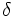
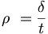

De: La Frikipedia, la enciclopedia extremadamente seria.
De: La Frikipedia, la enciclopedia extremadamente seria. De: La Frikipedia, la enciclopedia extremadamente seria.

«Lisa, en está casa seguimos las leyes de la...¡¡¡TERMODINÁMICA!!!»
~ Homer Simpson diciendo una parida escala 4,232323232323...
Dícese de la frase que se dice sin sentido alguno, que tiene un significado totalmente absurdo e incoherente (si es que lo tiene) y que normalmente produce diarrea mental a las personas que están en su radio de acción. El radio de acción de una parida se mide en parianes, y puede tener un valor de 1 a 6 en la escala de Python (nombrada así en honor a los máximos representantes del humor absurdo de los últimos ocho milenios y medio)
Habitualmente, el valor en parianes de una parida suele ser inversamente proporcional al tiempo que se pasa pensándola (t) y directamente proporcional a la diarrea mental que produce (, medida en collejas) de acuerdo con la siguiente fórmula:

Claro que en el caso de profesionales maquinadores de paridas (como los Monty Python), esta formula no sirve, pues aunque la esten pensando veinte años produce una diarrea mental de alcance infinito, de la que solo podrían salvarse las piedras o Dios.
Nivel 1 - Es una parida de poco rango, normalmente pensada durante mucho tiempo y que no suele producir mucha diarrea mental, aunque sí un par de comentarios al estilo "hala machote, castigado en la esquina sin amigos" o "ya pasó todo"
Nivel 2 - Ya es un pariolo considerable, e incluso puede arrancar algunas collejitas, pero tampoco está a la altura de un concursante de Operación Truño
Nivel 3 - Quien diga una parida de tres parianes ya puede considerarse importante, incluso tiene bastantes posibilidades de que le llamen a algún concurso para idiotas en la tele o que le dejen la nuca roja
Nivel 4 - Pocas personas pueden llegar a este nivel. Solo algunas como Zapatero(la tierra es del viento), Leire Pajín (acontecimiento universal), Pocholo o Maria Teresa Campos han llegado a este estado. Claro que a ellos no les han llovido collejas, pero ten cuidado si las dices tú chaval, que acabarás malito.
Nivel 5 - Dicen que si alguien llega a decir una parida de nivel 5, todas las personas de la Tierra implosionarán en una nube de humo, la Tierra tomará forma de plátano y las bandas de señales de circular por la izquierda dominarán el mundo, solo Lopezillo ha llegado a conseguirlo (con eróticos resultados).
Nivel 6 - Solo en caso de que te escuche un ser de otra dimension se llegaria a este nivel. Todavia nos quedan muchos siglos de evolucion para consegirlo. En efecto, los planetas de nuestros esbirros los extratarrestres cambiarian de nombre y sus diametros incorporeos y polaridades se ajustarian a la nueva ley universal de la susodicha suprema parida.
Nota importante: Aquellos que se arriesguen a reproducir las paridas recolectadas en estos lugares en público se arriesga a sufrir un cólico nefrítico y a que le crezcan ortigas bajo los párpados, además de la ya mencionada diarrea mental
El máximo grado alcanzado por una parida ha sido de 4,95554321; y es la siguiente:
Ya no somos los hombres que dicen ¡Ni!. Ahora decimos ¡Equi Equi Equi tapannnnnn! está bien, ¿eh? Y para pasar por este bosque tendréis que cortar el árbol más alto del bosque con uuuun... ¡Aaarenqueeeeee!
Por otra parte se encuentra el caso de los estudiantes de Gran Canaria, que sumando las 1987 paridas que parieron en 6 horas alcanzaron un nivel de 4,9999999999994 parianes en la escala de Python. Véase más abajo para más detalles.
Para ver la lista de paridas famosas, véase: Anexo:Paridas más famosas en la historia de la humanidad.
En 2006, un grupo de estudiantes de secundaria de Las Palmas de Gran Canaria creó un nuevo uso para el "Clicker" de AXE: El Paridómetro. Se trata de utilizarlo para contar las paridas dichas en clase, tanto por profesores como por alumnos. Su récord fue de 1987 paridas en 6 horas, causando graves efectos secundarios sobre la salud mental de los alumnos. Se estima que alcanzó un 4,9999999999994 parianes en la escala de Phyton. Para ver imagen del Paridómetro: http://blog.ebatial.es/Imagenes/AxeClick.jpg
Me entristece haber convertido este artículo en otra estúpida lista de frases sueltas separadas por cuadraditos, pero es lo que hay. Parece el espíritu de la frikipedia :P. Si te molesta, ¡a leer otra cosa!
Autor(es):
{kind=link}